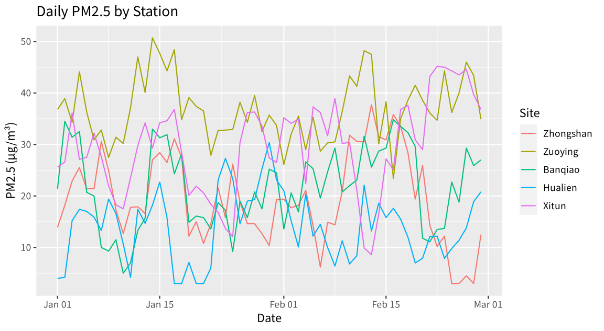
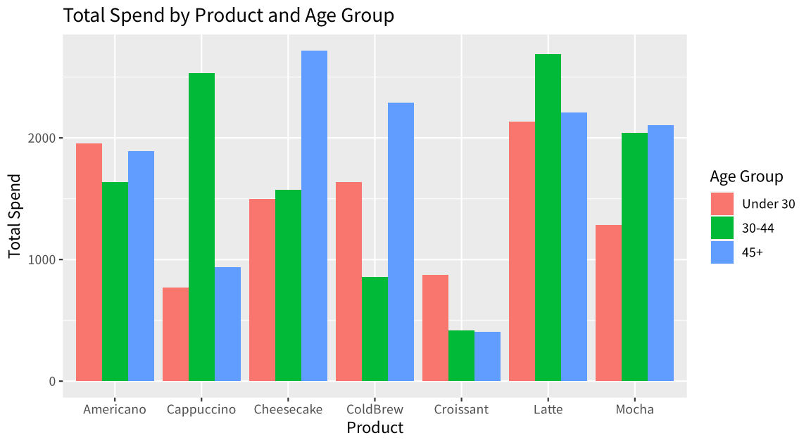

作業 1
空氣品質資料整理與咖啡店會員分析
作業 1 有兩大題：第 1 題把一份「日期擺在欄名」的空氣品質資料整理成整齊資料，再做月平均與折線圖；第 2 題把連鎖咖啡店的三張表合併，比較不同會員等級與年齡層的消費。全部只用課堂教過的方法完成：
- 讀檔與整理：
read_csv()、gather()、spread()、separate()（第 2 章 2.4） - 資料操作：
filter()、select()、mutate()、rename()、arrange()、group_by()+summarise()、count()、tally()（第 2 章 2.2） - 合併：
left_join()（第 2 章 2.5） - 分組：
ifelse()、%in%、factor()（第 1 章、第 3 章 3.5） - 畫圖：
ggplot()+geom_line()、geom_col()（第 5 章 5.3）
每一題的結構：題目 → 程式與輸出 → 列點說明在做什麼 → 「可直接貼到作業」的段落文字（按「複製這段」就能貼進 Word）。程式碼和文字中的函數名稱都有虛線底線，點下去會跳到課堂講解那個函數的地方。
資料檔：air.csv、member.csv、menu.csv、orders.csv。把四個檔案放在工作目錄，下面的程式碼就能照順序跑出同樣的結果。
library(tidyverse)
1.1空氣品質資料整理成 tidy 格式
對應課程內容（11 處）
- 第 1 章 1.8・讀 CSV：read.csv()（read_csv）
- 第 1 章 1.6・拿到資料先檢查（dim）
- 第 2 章 2.4・pivot_longer()／gather()：欄名其實是資料 → 收攏（gather）
- 第 2 章 2.4・separate()：一欄拆成多欄（separate）
- 第 2 章 2.4・pivot_wider()／spread()：一欄裝了兩個變數 → 攤開（spread）
- 第 2 章 2.2・mutate()：新增欄位（mutate）
- 第 1 章 1.1・日期型別：as.Date()（as.Date）
- 第 2 章 2.2・select()：挑欄（select）
- 第 2 章 2.2・arrange()：排序（arrange）
- 第 1 章 1.1・基本資料型別（class）
- 第 2 章 2.2・計數與抽樣：count()、tally()、sample_n()（count）
資料為 2025/1/1～2025/2/28，5 個空氣品質測站的每日平均濃度。site_county 是測站名稱與所在縣市（如「中山 臺北市」），pollutant 是污染物（PM2.5 細懸浮微粒 μg/m³、O3 臭氧 ppb），其餘每一欄是某一天的濃度。請用 tidyr 的 gather、spread、separate 等函數，整理成 site、county、date、PM2.5、O3 五欄的 tidy 格式，其中 date 須為日期型態，並依測站、日期排序。
先看原始資料
## [1] 10 61air[, 1:6]
## # A tibble: 10 × 6
## site_county pollutant `2025/2/28` `2025/2/27` `2025/2/26` `2025/2/25`
## <chr> <chr> <dbl> <dbl> <dbl> <dbl>
## 1 中山 臺北市 PM2.5 12.5 3 4.5 3
## 2 中山 臺北市 O3 35.1 35.8 36.9 25.1
## 3 板橋 新北市 PM2.5 27 25.9 29.3 18.8
## 4 板橋 新北市 O3 44.7 40.7 34.2 39.8
## 5 西屯 臺中市 PM2.5 36.8 39.7 44.6 43.5
## 6 西屯 臺中市 O3 41.3 40.3 40.9 50.1
## 7 左營 高雄市 PM2.5 34.9 43.4 46 40
## 8 左營 高雄市 O3 40.3 39.6 35.9 40.9
## 9 花蓮 花蓮縣 PM2.5 20.8 18.9 13.8 11.4
## 10 花蓮 花蓮縣 O3 37.4 33.3 32.8 31.3原始資料有 10 列、61 欄。每一列是「一個測站 × 一種污染物」的組合（5 站 × 2 種 = 10 列），而 59 個日期被放在欄名上，而且由 2/28 倒序排到 1/1。這違反整齊資料的三個原則（變數一欄、觀察值一列、值一格）：
- 「日期」是一個變數，卻被拆成 59 個欄名 → 要用
gather()收成一欄。 - 「測站」和「縣市」兩個變數擠在
site_county同一欄 → 要用separate()拆開。 - 「PM2.5」和「O3」是兩個變數，卻放在
pollutant同一欄的值裡 → 要用spread()攤成兩欄。
整理
tidyair <- air %>%
gather(key = "date", value = "concentration", `2025/2/28`:`2025/1/1`) %>%
separate(site_county, into = c("site", "county"), sep = " ") %>%
spread(key = pollutant, value = concentration) %>%
mutate(date = as.Date(date, format = "%Y/%m/%d")) %>%
select(site, county, date, PM2.5, O3) %>%
arrange(site, date)
tidyair
## # A tibble: 295 × 5
## site county date PM2.5 O3
## <chr> <chr> <date> <dbl> <dbl>
## 1 中山 臺北市 2025-01-01 13.9 23.4
## 2 中山 臺北市 2025-01-02 18.2 28.8
## 3 中山 臺北市 2025-01-03 22.9 35.2
## 4 中山 臺北市 2025-01-04 25.5 33.8
## 5 中山 臺北市 2025-01-05 21.4 34.1
## 6 中山 臺北市 2025-01-06 21.4 26.3
## 7 中山 臺北市 2025-01-07 30.6 22.8
## 8 中山 臺北市 2025-01-08 24.9 27.1
## 9 中山 臺北市 2025-01-09 17.3 31.2
## 10 中山 臺北市 2025-01-10 12.7 30.8
## # ℹ 285 more rows逐步說明：
gather(key = "date", value = "concentration",2025/2/28:2025/1/1)：把從2025/2/28到2025/1/1的 59 個日期欄收攏。原本的欄名變成新欄date的值、格子裡的濃度變成新欄concentration。欄名以數字開頭又含斜線，所以要用反引號包起來。這一步之後資料變成 10 × 59 = 590 列。separate(site_county, into = c("site", "county"), sep = " ")：以空白為分隔，把「中山 臺北市」拆成site（中山）與county（臺北市）。spread(key = pollutant, value = concentration)：pollutant的兩個值 PM2.5、O3 變成兩個新欄，濃度填進對應的格子。同一測站同一天原本有兩列（PM2.5 一列、O3 一列），現在合成一列，所以列數減半為 295 列（5 站 × 59 天）。mutate(date = as.Date(date, format = "%Y/%m/%d"))：gather()收進來的日期是文字（如 "2025/1/1"），題目要求日期型態，所以用as.Date()轉換；format告訴 R 原本的寫法是「年/月/日」。轉成日期後才能正確地依時間排序與畫圖——文字排序會把 "2025/1/10" 排在 "2025/1/2" 前面。select()依題目的欄位順序排好，arrange(site, date)先依測站、再依日期由早到晚排序。
結果是 295 列 5 欄，date 欄的型別是 <date>，前幾列和題目給的範例一致（中山 2025-01-01 的 PM2.5 是 13.9、O3 是 23.4）。
class(tidyair$date)
## [1] "Date"count(tidyair, site) # 每個測站都有 59 天
## # A tibble: 5 × 2
## site n
## <chr> <int>
## 1 中山 59
## 2 左營 59
## 3 板橋 59
## 4 花蓮 59
## 5 西屯 59原資料有 10 列 61 欄，每一列是一個測站與一種污染物的組合，59 個日期分散在欄名中，而且日期由 2025/2/28 倒序排到 2025/1/1，不符合整齊資料「每個變數一欄、每個觀察值一列」的原則。因此我先用 gather() 將 59 個日期欄收集成 date 與 concentration 兩欄，再用 separate() 以空白將 site_county 拆成 site（測站）與 county（縣市），接著用 spread() 把 pollutant 中的 PM2.5 與 O3 展開成兩個欄位，讓同一測站、同一天的兩種污染物濃度在同一列。由於 gather() 收集進來的日期是文字，我用 mutate() 搭配 as.Date() 並指定 format = "%Y/%m/%d"，將 date 轉為日期型態，最後用 select() 依題目順序排列欄位，並用 arrange(site, date) 依測站、日期排序。整理後的資料為 295 列 5 欄（5 個測站 × 59 天），date 的型態為 Date，前幾筆資料與題目示範的格式一致。
1.2各測站月平均、超標天數與折線圖
對應課程內容（5 處）
- 第 2 章 2.4・separate()：一欄拆成多欄（separate）
- 第 2 章 2.2・summarise() 與 group_by()：先分組、再彙總（group_by、summarise）
- 第 1 章 1.2・常用的摘要函數（mean、sum）
- 第 5 章 5.3・散佈圖：把第三個變數放進顏色和形狀（ggplot、aes）
- 第 5 章 5.3・折線圖、並排長條圖與圖例文字（geom_line、scale_color_discrete、labs）
利用整理好的資料，計算各測站在 1 月、2 月的 PM2.5 平均值，以及 PM2.5 日平均超過 35 μg/m³ 的天數，並以折線圖畫出 5 個測站 PM2.5 的每日變化。
月平均與超標天數
airmonth <- tidyair %>%
separate(date, into = c("year", "month", "day"), sep = "-", convert = TRUE) %>%
group_by(site, month) %>%
summarise(average = mean(PM2.5),
over35 = sum(PM2.5 > 35))
airmonth
## # A tibble: 10 × 4
## # Groups: site [5]
## site month average over35
## <chr> <int> <dbl> <int>
## 1 中山 1 19.6 0
## 2 中山 2 19.5 2
## 3 左營 1 37.0 17
## 4 左營 2 36.6 17
## 5 板橋 1 19.7 0
## 6 板橋 2 23.6 0
## 7 花蓮 1 14.7 0
## 8 花蓮 2 13.3 0
## 9 西屯 1 26.6 4
## 10 西屯 2 32.7 14做法：
- 要依「月份」分組，先用
separate()以「-」把日期（例如 2025-01-01）拆成year、month、day三欄；convert = TRUE讓拆出來的月份變成數字 1、2，而不是文字 "01"、"02"。 group_by(site, month)：依測站與月份分成 5 × 2 = 10 組。summarise()每組算兩個值：average = mean(PM2.5)是 PM2.5 的月平均；over35 = sum(PM2.5 > 35)是超標天數——PM2.5 > 35在超過 35 的日子是 TRUE，TRUE 加總時算 1（第 1 章 1.9 用sum(is.na(x))數 NA 個數也是同一個道理），所以加起來就是天數。
結果共 10 列：
- 左營污染最嚴重：1 月平均 36.98、2 月 36.61，兩個月都超過 35，1 月 31 天中有 17 天、2 月 28 天中有 17 天超標，超過一半的日子空氣品質不佳。
- 西屯 2 月明顯惡化：平均由 1 月的 26.62 升到 32.73，超標天數由 4 天增為 14 天。
- 中山兩個月平均都約 19.6，只有 2 月出現 2 天超標。
- 板橋兩個月都沒有超標，但 2 月平均（23.63）比 1 月（19.65）高。
- 花蓮平均最低（約 13～15），也沒有任何超標日。
整體來看，南部的左營與中部的西屯是兩個月中需要注意的測站；位於東部的花蓮空氣品質最好。
每日變化折線圖
tidyair %>%
ggplot(aes(x = date, y = PM2.5, color = site)) +
geom_line() +
scale_color_discrete(labels = c("Zhongshan", "Zuoying", "Banqiao", "Hualien", "Xitun")) +
labs(title = "Daily PM2.5 by Station", x = "Date", y = "PM2.5 (μg/m³)", color = "Site")

做法：aes() 把日期對應到 x 軸、PM2.5 對應到 y 軸、測站對應到顏色，geom_line() 依顏色畫成 5 條折線。因為 date 已經是日期型態，x 軸會自動以時間刻度顯示。scale_color_discrete(labels = ...) 把圖例換成英文站名；labels 的順序要和測站排序（中山、左營、板橋、花蓮、西屯）一致。labs() 設定標題與軸名稱。
從圖可以看到：
- 左營（黃綠色線）大部分日子都在最上方，常常超過 35，最高約 50。
- 西屯（粉紅色線）在 2 月下旬持續在 40 以上，是 2 月超標天數大增的原因。
- 中山與板橋在 2 月中旬有一波上升（中山最高接近 38，就是它 2 月那 2 天超標），中山到了月底又降到個位數。
- 花蓮（藍色線）大多在最下方，只有 1 月底短暫升到 30 左右。
以第 1 題整理好的 tidyair 為基礎，我先用 separate() 將 date 以「-」拆為 year、month、day，並設定 convert = TRUE 轉為數值，再用 group_by(site, month) 依測站與月份分組，以 summarise() 計算 PM2.5 的月平均 average，以及 PM2.5 大於 35 的天數 over35（PM2.5 > 35 成立時為 TRUE，加總即為天數），結果共 10 列（5 站 × 2 個月）。左營是污染最嚴重的測站，1 月與 2 月平均分別為 36.98 與 36.61，兩個月的超標天數都是 17 天，超過一半的日子空氣品質不佳；西屯 2 月明顯惡化，平均由 1 月的 26.62 升到 32.73，超標天數由 4 天增為 14 天；中山兩個月平均都約 19.6，只有 2 月有 2 天超標；板橋兩個月都沒有超標，但 2 月平均比 1 月高；花蓮平均最低（約 13～15），也沒有超標。折線圖以 ggplot() 搭配 geom_line() 繪製，x 軸為日期、y 軸為 PM2.5，以 color = site 區分 5 個測站，並用 scale_color_discrete() 將圖例改為英文站名。從圖中可見左營大多位於最上方，常超過 35；西屯在 2 月下旬持續高於 40；中山與板橋在 2 月中旬有一波上升；花蓮大多位於最下方，整體空氣品質最好。
2.1拆開 menu 的商品編號與名稱
對應課程內容（2 處）
- 第 1 章 1.8・讀 CSV：read.csv()（read_csv）
- 第 2 章 2.4・separate()：一欄拆成多欄（separate）
連鎖咖啡店有三個資料：orders（訂單）、member（會員）、menu（產品）。menu.df 裡將兩個變數誤記錄在同一個 column，請將其分開為兩個變數 Product（數字部分）及 Item（商品部分），取代原 menu.df。
member <- read_csv("member.csv")
menu <- read_csv("menu.csv")
orders <- read_csv("orders.csv")
menu
## # A tibble: 7 × 1
## Item
## <chr>
## 1 201_Latte
## 2 202_Americano
## 3 203_Cappuccino
## 4 204_Mocha
## 5 205_ColdBrew
## 6 206_Cheesecake
## 7 207_Croissantmenu 只有一欄 Item，值是像「201_Latte」的字串：底線前是商品編號、底線後是商品名稱，兩個變數擠在同一欄。
menu.df <- menu %>%
separate(Item, into = c("Product", "Item"), sep = "_", convert = TRUE)
menu.df
## # A tibble: 7 × 2
## Product Item
## <int> <chr>
## 1 201 Latte
## 2 202 Americano
## 3 203 Cappuccino
## 4 204 Mocha
## 5 205 ColdBrew
## 6 206 Cheesecake
## 7 207 Croissant做法：用 separate() 以底線「_」為分隔，拆成 Product 與 Item 兩欄。加上 convert = TRUE，Product 會自動轉成數值（<int>）——因為 orders 的 Product 也是數值，型別一致之後下一題才能用它當鍵合併。結果是 7 列 2 欄，Product 為 201～207，對應 Latte、Americano 等 7 種商品。
原本的 menu 只有 1 欄 Item，值是「201_Latte」這種形式，把商品編號與商品名稱兩個變數記錄在同一欄。因此我用 separate() 以底線「_」將其拆為 Product 與 Item 兩欄，並設定 convert = TRUE 讓 Product 轉為數值，目的是與 orders 的 Product 型別一致，方便之後合併。整理後的 menu.df 為 7 列 2 欄，Product 為 201～207，Item 為對應的商品名稱（Latte、Americano、Cappuccino、Mocha、ColdBrew、Cheesecake、Croissant）。
2.2OrderID 命名與三表合併
對應課程內容（8 處）
- 第 1 章 1.6・拿到資料先檢查（names、dim）
- 第 2 章 2.2・其他常用動詞（rename）
- 第 2 章 2.2・select()：挑欄（select）
- 第 2 章 2.5・四種 join（left_join）
- 第 2 章 2.2・filter()：依條件挑列（filter）
- 第 1 章 1.9・資料框的缺失值（is.na）
- 第 2 章 2.2・計數與抽樣：count()、tally()、sample_n()（tally）
- 第 1 章 1.8・讀 CSV：read.csv()（read_csv）
讀入 orders.csv 時第一欄沒有變數名稱，請將其命名為 OrderID。以 orders.df 為主，將 3 個報表合併為 full.table，並說明有幾筆訂單找不到對應的會員資料。
處理沒有名稱的第一欄
names(orders)
## [1] "...1" "Branch" "Product" "Member" "UnitPrice"
## [6] "Quantity" "Channel" "Discount"names(member)
## [1] "...1" "Member" "Age" "Level" "Gender" "City"orders.csv 的第一欄在檔案裡沒有欄名（內容是 1～150 的訂單編號），read_csv() 讀入時會自動命名為 ...1。member.csv 也一樣，它的 ...1 是流水號，內容和 Member 重複。
orders.df <- orders %>%
rename(OrderID = `...1`)
member.df <- member %>%
select(Member, Age, Level, Gender, City)
orders.df
## # A tibble: 150 × 8
## OrderID Branch Product Member UnitPrice Quantity Channel Discount
## <dbl> <chr> <dbl> <dbl> <dbl> <dbl> <chr> <dbl>
## 1 1 Daan 206 21 150 2 Delivery 0
## 2 2 Xinyi 201 6 120 1 Delivery 0
## 3 3 Xinyi 205 3 110 1 Store 0.1
## 4 4 Xinyi 201 9 120 2 App 0.1
## 5 5 Banqiao 201 7 120 1 Store 0
## 6 6 Xinyi 207 12 85 1 Store 0
## 7 7 Banqiao 202 10 90 2 Delivery 0.2
## 8 8 Daan 201 4 120 1 Delivery 0
## 9 9 Xinyi 201 13 120 2 Store 0.2
## 10 10 Xinyi 203 5 120 1 Store 0.1
## # ℹ 140 more rowsrename(OrderID =...1)：新名稱在左、舊名稱在右；...1開頭是點，要用反引號包起來。select()只保留會員表需要的 5 個欄位，把重複的流水號去掉，否則合併後會出現兩個意義不明的...1欄。
以 orders 為主合併
full.table <- orders.df %>%
left_join(menu.df, by = "Product") %>%
left_join(member.df, by = "Member")
dim(full.table)
## [1] 150 13full.table
## # A tibble: 150 × 13
## OrderID Branch Product Member UnitPrice Quantity Channel Discount
## <dbl> <chr> <dbl> <dbl> <dbl> <dbl> <chr> <dbl>
## 1 1 Daan 206 21 150 2 Delivery 0
## 2 2 Xinyi 201 6 120 1 Delivery 0
## 3 3 Xinyi 205 3 110 1 Store 0.1
## 4 4 Xinyi 201 9 120 2 App 0.1
## 5 5 Banqiao 201 7 120 1 Store 0
## 6 6 Xinyi 207 12 85 1 Store 0
## 7 7 Banqiao 202 10 90 2 Delivery 0.2
## 8 8 Daan 201 4 120 1 Delivery 0
## 9 9 Xinyi 201 13 120 2 Store 0.2
## 10 10 Xinyi 203 5 120 1 Store 0.1
## # ℹ 140 more rows
## # ℹ 5 more variables: Item <chr>, Age <dbl>, Level <chr>, Gender <chr>,
## # City <chr>做法：題目要求「以 orders.df 為主」，所以用 left_join()（四種 join 的差別）——保留左表（訂單）的每一列，右表對得上的就把欄位貼過來，對不上的填 NA。先以 Product 合併 menu.df 取得商品名稱 Item，再以 Member 合併會員資料。合併後是 150 列 13 欄，列數和訂單數相同，表示沒有訂單被刪掉或重複。
找不到會員資料的訂單
## # A tibble: 1 × 1
## n
## <int>
## 1 3## # A tibble: 3 × 5
## OrderID Member Item Age Level
## <dbl> <dbl> <chr> <dbl> <chr>
## 1 69 31 ColdBrew NA <NA>
## 2 76 32 Cheesecake NA <NA>
## 3 80 32 Mocha NA <NA>找不到會員資料的訂單，會員欄位（Age、Level 等）都是 NA。用 filter(is.na(Age)) 篩出這些訂單，再用 tally() 計數，共有 3 筆：OrderID 69（會員編號 31）與 OrderID 76、80（會員編號 32）。會員表只有 1～30 號會員，所以 31、32 號在會員表中找不到。
orders.csv 有 150 列 8 欄，第一欄沒有變數名稱，內容是 1～150 的訂單編號，用 read_csv() 讀入時會被自動命名為 ...1，因此我用 rename() 將其改名為 OrderID，存為 orders.df。member.csv 的第一欄同樣是沒有名稱的流水號，且與 Member 欄重複，所以先用 select() 只保留 Member、Age、Level、Gender 與 City，存為 member.df。合併時以 orders.df 為主，使用 left_join() 保留全部訂單：先以 Product 合併 menu.df 取得商品名稱，再以 Member 合併 member.df 取得會員資料。合併後的 full.table 為 150 列 13 欄，訂單筆數不變。接著用 filter(is.na(Age)) 篩出會員欄位為缺值的訂單，再以 tally() 計數，共有 3 筆訂單找不到對應的會員資料，分別是 OrderID 69（會員編號 31）以及 OrderID 76、80（會員編號 32），因為會員表中只有 1～30 號會員。
2.3新增實付金額 spend
對應課程內容（4 處）
- 第 2 章 2.2・mutate()：新增欄位（mutate）
- 第 2 章 2.2・select()：挑欄（select）
- 第 1 章 1.6・拿到資料先檢查（head）
- 第 1 章 1.2・常用的摘要函數（summary）
在 full.table 新增一個變數「實付金額」為 spend = UnitPrice*Quantity*(1-Discount)。
full.table <- full.table %>%
mutate(spend = UnitPrice * Quantity * (1 - Discount))
full.table %>%
select(OrderID, Item, UnitPrice, Quantity, Discount, spend) %>%
head()
## # A tibble: 6 × 6
## OrderID Item UnitPrice Quantity Discount spend
## <dbl> <chr> <dbl> <dbl> <dbl> <dbl>
## 1 1 Cheesecake 150 2 0 300
## 2 2 Latte 120 1 0 120
## 3 3 ColdBrew 110 1 0.1 99
## 4 4 Latte 120 2 0.1 216
## 5 5 Latte 120 1 0 120
## 6 6 Croissant 85 1 0 85做法：單價 × 數量是原價，再乘以 (1 − 折扣率) 就是實際付的錢。用 mutate() 新增 spend 欄，並存回 full.table（full.table <- full.table %>% ...），後面兩題才用得到。例如第 3 筆訂單：ColdBrew 單價 110、買 1 杯、打 9 折，實付 110 × 1 × 0.9 = 99 元。新增後仍是 150 列，欄位多了 spend，共 14 欄。
summary(full.table$spend)
## Min. 1st Qu. Median Mean 3rd Qu. Max.
## 72 120 180 234 318 750每筆訂單實付金額從 72 元到 750 元，平均約 234 元。
full.table 中的 UnitPrice 為單價、Quantity 為購買數量、Discount 為折扣比例，因此實付金額為單價乘以數量，再乘以 (1 − 折扣)。我用 mutate() 依此公式新增變數 spend，並存回 full.table。例如第 3 筆訂單 ColdBrew 單價 110 元、購買 1 杯、折扣 0.1，實付金額為 110 × 1 × 0.9 = 99 元。新增後資料仍為 150 列，欄位多了 spend 一欄，共 14 欄；每筆訂單的實付金額介於 72 元與 750 元之間，平均約 234 元。
2.4會員等級分組比較
對應課程內容（9 處）
- 第 1 章 1.8・快速摘要一份真實資料（table）
- 第 2 章 2.2・filter()：依條件挑列（filter）
- 第 1 章 1.9・資料框的缺失值（is.na）
- 第 2 章 2.2・mutate()：新增欄位（mutate）
- 第 3 章 3.5・ifelse()：向量化的判斷（ifelse）
- 第 1 章 1.2・集合運算與 %in%（%in%）
- 第 2 章 2.2・計數與抽樣：count()、tally()、sample_n()（count）
- 第 2 章 2.2・summarise() 與 group_by()：先分組、再彙總（group_by、summarise、n）
- 第 1 章 1.2・常用的摘要函數（mean、sum）
在 full.table 將會員等級分組，gold 和 platinum 的會員為一組，其他等級為一組（找不到會員資料者請自行說明處理方式），針對兩組會員進行比較介紹（例如平均年紀、性別、城市、購買通路、消費情況差異等）。
分組與缺失值的處理
table(member.df$Level)
##
## gold platinum regular silver
## 7 4 11 8group.table <- full.table %>%
filter(!is.na(Level)) %>%
mutate(group = ifelse(Level %in% c("gold", "platinum"), "Gold/Platinum", "Other"))
count(group.table, group)
## # A tibble: 2 × 2
## group n
## <chr> <int>
## 1 Gold/Platinum 65
## 2 Other 82- 會員等級有 gold、platinum、silver、regular 四種。
Level %in% c("gold", "platinum")判斷是否屬於高等級，再用ifelse()給組名：是的為「Gold/Platinum」，其餘（silver、regular）為「Other」。 - 找不到會員資料的處理：2.2 的 3 筆訂單（2 位會員）沒有等級，無法判斷屬於哪一組；若另立一組只有 3 筆訂單、2 位會員，樣本太少不具比較意義，所以用
filter(!is.na(Level))先排除，剩下 147 筆訂單。
會員特徵：用會員表計算
full.table 是「一列一筆訂單」，同一位會員下了 5 單就會出現 5 次（資料框一列是一個觀察值，這裡的觀察值是訂單，不是會員）。如果直接用它算平均年齡或性別比例，下單多的會員會被重複計算。所以年齡、性別、城市這些「人」的特徵，改用會員表（一列一位會員）計算。
member.group <- member.df %>%
mutate(group = ifelse(Level %in% c("gold", "platinum"), "Gold/Platinum", "Other"))
mg <- member.group %>%
group_by(group) %>%
summarise(members = n(), average_age = mean(Age))
mg
## # A tibble: 2 × 3
## group members average_age
## <chr> <int> <dbl>
## 1 Gold/Platinum 11 39.9
## 2 Other 19 40.7member.group %>% count(group, Gender)
## # A tibble: 4 × 3
## group Gender n
## <chr> <chr> <int>
## 1 Gold/Platinum female 5
## 2 Gold/Platinum male 6
## 3 Other female 10
## 4 Other male 9member.group %>% count(group, City)
## # A tibble: 7 × 3
## group City n
## <chr> <chr> <int>
## 1 Gold/Platinum New Taipei 3
## 2 Gold/Platinum Taipei 6
## 3 Gold/Platinum Taoyuan 2
## 4 Other New Taipei 2
## 5 Other Taichung 4
## 6 Other Taipei 11
## 7 Other Taoyuan 2- 人數與年齡：Gold/Platinum 組 11 人、平均 39.9 歲；Other 組 19 人、平均 40.7 歲，兩組年齡幾乎相同。
- 性別：Gold/Platinum 組女性 5 人、男性 6 人；Other 組女性 10 人、男性 9 人，兩組都接近各半。
- 城市：兩組都以台北的會員最多（6 人、11 人）；台中的 4 位會員全部在 Other 組，Gold/Platinum 組沒有台中會員。
消費行為：用訂單計算
gs <- group.table %>%
group_by(group) %>%
summarise(orders = n(),
average_spend = mean(spend),
total_spend = sum(spend),
average_quantity = mean(Quantity))
gs
## # A tibble: 2 × 5
## group orders average_spend total_spend average_quantity
## <chr> <int> <dbl> <dbl> <dbl>
## 1 Gold/Platinum 65 230. 14956. 2.05
## 2 Other 82 238. 19494. 2.16group.table %>% count(group, Channel)
## # A tibble: 6 × 3
## group Channel n
## <chr> <chr> <int>
## 1 Gold/Platinum App 21
## 2 Gold/Platinum Delivery 14
## 3 Gold/Platinum Store 30
## 4 Other App 30
## 5 Other Delivery 15
## 6 Other Store 37- 單筆消費：Gold/Platinum 組 65 筆訂單，每單平均實付 230 元、平均買 2.05 件；Other 組 82 筆訂單，每單平均實付 238 元、平均買 2.16 件。單筆消費幾乎沒有差別。
- 購買通路：兩組都是 Store 最多、App 次之、Delivery 最少。
換成「每位會員」來看
兩組人數不同（11 人與 19 人），只比總額不公平。把訂單數與總實付金額除以會員數（前面存好的 gs 和 mg 兩張表，用 $ 取出欄位直接相除）：
# 第 1 個是 Gold/Platinum 組、第 2 個是 Other 組
gs$orders / mg$members # 平均每位會員下幾單
## [1] 5.909 4.316gs$total_spend / mg$members # 平均每位會員累計花多少錢
## [1] 1360 1026Gold/Platinum 組平均每人下約 5.9 單、累計實付約 1,360 元；Other 組約 4.3 單、約 1,026 元。
結論：高等級會員和其他會員在年齡、性別、城市、購買通路與「每一單花多少」上都差不多；主要差別在於購買頻率——高等級會員來得更勤，所以累積消費較多。這也符合會員等級通常依累積消費升級的設計。
依題目將 Level 為 gold 與 platinum 的會員歸為「Gold/Platinum」組，其餘 silver 與 regular 歸為「Other」組。合併後有 3 筆訂單（OrderID 69、76、80）找不到會員資料，無法判斷等級；若另立一組只有 3 筆訂單、2 位會員，樣本過少，不具比較意義，因此先用 filter(!is.na(Level)) 將其排除，剩下 147 筆訂單，再以 mutate() 搭配 ifelse() 與 %in% 建立分組變數 group。由於 full.table 是一列一筆訂單，同一位會員的多筆訂單會被重複計算，所以年齡、性別、城市等會員特徵改以會員表計算，消費行為則以訂單計算。會員特徵方面，Gold/Platinum 組有 11 人、平均年齡 39.9 歲，Other 組有 19 人、平均年齡 40.7 歲，兩組年齡相近；性別方面，Gold/Platinum 組女性 5 人、男性 6 人，Other 組女性 10 人、男性 9 人，都接近各半；城市方面兩組都以台北最多，而台中的 4 位會員全部在 Other 組。消費行為方面，Gold/Platinum 組有 65 筆訂單，每單平均實付 230 元、平均購買 2.05 件；Other 組有 82 筆訂單，每單平均實付 238 元、平均購買 2.16 件，單筆消費幾乎沒有差別。購買通路兩組都以 Store 最多，其次為 App，再來是 Delivery。不過若以每位會員計算，Gold/Platinum 組平均每人下約 5.9 單、累計實付約 1,360 元，Other 組則約 4.3 單、約 1,026 元。由此可見，高等級會員與其他會員在年齡、性別、通路與單筆消費上差異不大，主要差別在於購買頻率較高，因而累積消費較多。
2.5年齡層的消費比較
對應課程內容（10 處）
- 第 2 章 2.2・filter()：依條件挑列（filter）
- 第 1 章 1.9・資料框的缺失值（is.na）
- 第 2 章 2.2・mutate()：新增欄位（mutate）
- 第 3 章 3.5・ifelse()：向量化的判斷（ifelse）
- 第 1 章 1.5・指定 levels 與 labels（factor）
- 第 2 章 2.2・計數與抽樣：count()、tally()、sample_n()（count）
- 第 2 章 2.2・summarise() 與 group_by()：先分組、再彙總（group_by、summarise、n）
- 第 1 章 1.2・常用的摘要函數（mean、sum）
- 第 5 章 5.3・散佈圖：把第三個變數放進顏色和形狀（ggplot、aes）
- 第 5 章 5.3・折線圖、並排長條圖與圖例文字（geom_col、labs）
在 full.table 將年紀分為三組（未滿 30 歲、30–44 歲、45 歲以上），比較各年齡層的平均每筆消費與最常使用的通路，並對他們在不同產品的「實付金額」畫圖分析。
建立年齡組
age.table <- full.table %>%
filter(!is.na(Age)) %>%
mutate(age_group = ifelse(Age < 30, "Under 30",
ifelse(Age < 45, "30-44", "45+")),
age_group = factor(age_group, levels = c("Under 30", "30-44", "45+")))
member.df %>%
mutate(age_group = ifelse(Age < 30, "Under 30", ifelse(Age < 45, "30-44", "45+"))) %>%
count(age_group)
## # A tibble: 3 × 2
## age_group n
## <chr> <int>
## 1 30-44 10
## 2 45+ 10
## 3 Under 30 10- 找不到會員資料的 3 筆訂單沒有年齡，無法分組，所以先用
filter(!is.na(Age))排除，剩下 147 筆。 - 巢狀
ifelse()：未滿 30 歲為 "Under 30"；不是的再判斷是否未滿 45，是的為 "30-44"，其餘為 "45+"。 factor(..., levels = ...)指定三組由小到大的順序。不指定的話，表格和圖會依字母排成 30-44、45+、Under 30。- 三組各有 10 位會員。
平均每筆消費與通路
ag <- age.table %>%
group_by(age_group) %>%
summarise(orders = n(), average_spend = mean(spend))
ag
## # A tibble: 3 × 3
## age_group orders average_spend
## <fct> <int> <dbl>
## 1 Under 30 47 216.
## 2 30-44 51 230.
## 3 45+ 49 256.age.table %>% count(age_group, Channel)
## # A tibble: 9 × 3
## age_group Channel n
## <fct> <chr> <int>
## 1 Under 30 App 12
## 2 Under 30 Delivery 12
## 3 Under 30 Store 23
## 4 30-44 App 23
## 5 30-44 Delivery 6
## 6 30-44 Store 22
## 7 45+ App 16
## 8 45+ Delivery 11
## 9 45+ Store 22- 平均每筆實付：未滿 30 歲 216 元、30–44 歲 230 元、45 歲以上 256 元，隨年齡增加而上升。三組訂單數分別是 47、51、49 筆，相差不大。
- 最常使用的通路：未滿 30 歲與 45 歲以上最常用 Store；30–44 歲最常用 App，但只比 Store 多 1 筆，差距很小。
各產品的實付金額
age.table %>%
group_by(Item, age_group) %>%
summarise(total_spend = sum(spend)) %>%
ggplot(aes(x = Item, y = total_spend, fill = age_group)) +
geom_col(position = "dodge") +
labs(title = "Total Spend by Product and Age Group",
x = "Product", y = "Total Spend", fill = "Age Group")

做法：先用 group_by(Item, age_group) 加總每個產品在每個年齡層的實付金額，再用 geom_col() 畫長條圖。fill = age_group 依年齡層上色，position = "dodge" 讓三個年齡層的長條並排（預設是往上堆疊），方便直接比較高低。
從圖中可以看到：
- 未滿 30 歲的消費集中在 Latte 與 Americano 等咖啡類。
- 30–44 歲以 Latte 與 Cappuccino 最高，其中 Cappuccino 明顯多於其他年齡層。
- 45 歲以上以 Cheesecake 的實付金額最高，其次是 ColdBrew 與 Latte。Cheesecake 單價 150 元，是最貴的品項，這也說明了為什麼 45 歲以上的平均每筆消費最高。
- Latte 在三個年齡層都超過 2,000 元，是全店的主力商品；Mocha 在 30 歲以上兩組明顯比未滿 30 歲高；Croissant（單價 85 元，最便宜）在各年齡層都最低。
依題目將會員年齡分為「未滿 30 歲」、「30–44 歲」與「45 歲以上」三組。找不到會員資料的 3 筆訂單沒有年齡，無法分組，因此先用 filter(!is.na(Age)) 排除，剩下 147 筆訂單，再以 mutate() 搭配巢狀 ifelse() 建立 age_group，並用 factor() 將三組依年齡由小到大排序。三組各有 10 位會員，訂單數分別為 47、51、49 筆。以 group_by() 與 summarise() 計算平均每筆實付金額，未滿 30 歲為 216 元、30–44 歲為 230 元、45 歲以上為 256 元，呈現隨年齡增加而上升的趨勢。以 count() 統計各通路次數，未滿 30 歲與 45 歲以上最常使用 Store，30–44 歲則最常使用 App，但只比 Store 多 1 筆，差距很小。接著依產品與年齡層加總實付金額，以 geom_col() 搭配 position = "dodge" 繪製並排長條圖。從圖中可見，未滿 30 歲的消費集中在 Latte 與 Americano 等咖啡類；30–44 歲以 Latte 與 Cappuccino 最高，其中 Cappuccino 的實付金額明顯多於其他年齡層；45 歲以上則以單價最高（150 元）的 Cheesecake 實付金額最高，其次為 ColdBrew 與 Latte，這也是 45 歲以上平均每筆消費最高的原因之一。Latte 在三個年齡層都超過 2,000 元，是全店的主力商品；Croissant 在各年齡層都最低。